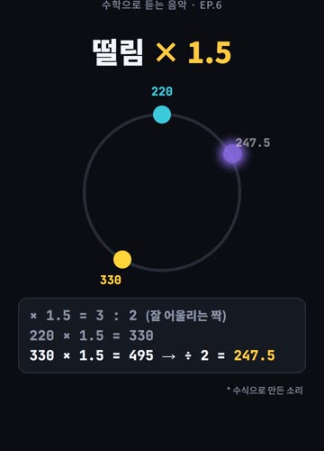
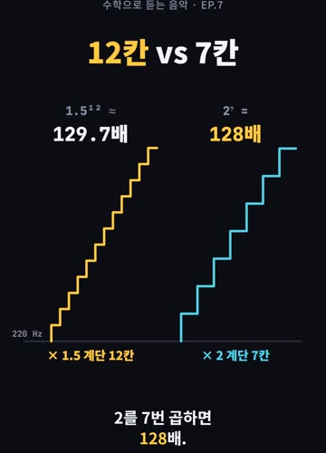
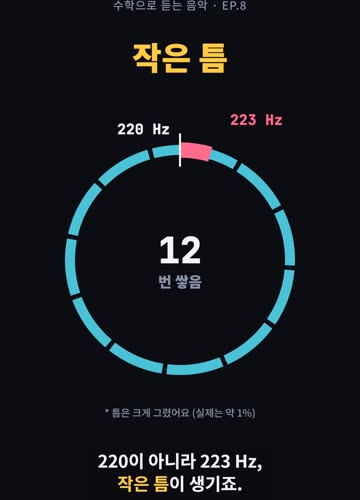
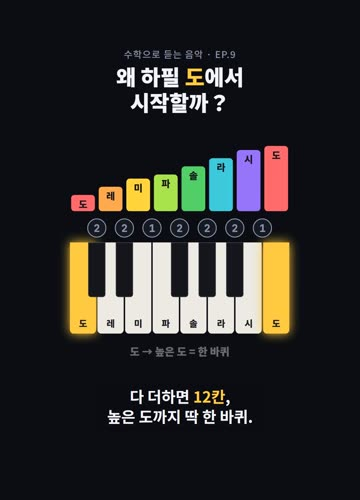

YouTube Shorts·Instagram Reels 시리즈 「수학으로 듣는 음악」(채널 뮤스 Muth). 대본, 모션그래픽, 합성음, 내레이션, 설명란, 배포 파일까지 한 사람이 AI 에이전트(Claude Code)와 함께 만들고, 평일마다 연재하고 있습니다.

원 위에 음이 하나씩 늘어나는 소리를 먼저 들려주고, “떨림 × 1.5”만으로 도레미가 생기는 과정을 보여줍니다. 시청자가 아는 도레미로 결론을 맺는 구성이 이 편에서 정해졌고, 이후 모든 편의 원칙이 되었습니다.
Shorts로 보기 ↗
1.5배를 12번 쌓은 계단(129.7배)과 2배를 7번 쌓은 계단(128배)을 나란히 그리고, 그 작은 차이를 220 Hz와 223 Hz를 같이 쳐서 귀로 들려줍니다. Instagram 조회수 4,461회로 시리즈에서 가장 높습니다.
Shorts로 보기 ↗| 편 | 제목 | 형식 | YouTube 조회수 | Instagram 조회수 |
|---|---|---|---|---|
| EP.1 | 소리는 숫자다 | 질문형 | 1.2천 | 집계 없음* |
| EP.2 | 도 다음에 또 도가 나오는 이유 | 질문형 | 1.6천 | 597 |
| EP.3 | 한 음 속의 무한 화음 | 질문형 | 1.6천 | 189 |
| EP.4 | 피아노와 바이올린은 왜 다르게 들릴까？ | 귀 퀴즈형 | 1.2천 | 522 |
| EP.5 | 어떤 소리는 왜 잘 어울릴까？ | 비교형 | 1.4천 | 760 |
| EP.6 | 비율 하나로 음계를 만들 수 있을까？ | 실시간 계산형 | 1.2천 | 2,028 |
| EP.7 | 12음은 왜 딱 맞지 않을까？ | 오해 깨기형 | 1.2천 | 4,461 |
| EP.8 | 피아노는 일부러 틀려 있다 | 귀 퀴즈형 | 1.2천 | 1,925 |
| EP.9 | 왜 하필 도에서 시작할까？ | 비교형 | 공개 예정 | 공개 예정 |
Instagram 조회수는 Graph API 인사이트(views)로 읽은 값입니다. * EP.1은 API가 인사이트를 제공하지 않습니다. Instagram 조회수는 EP.2–4의 200–600회에서 EP.6–8의 1,900–4,500회로 늘었습니다.
편마다 대본, 모션그래픽, 시연용 소리, 내레이션, 자막, 설명란, 인스타 캡션, 고정 댓글, 썸네일이 필요합니다. 수작업으로는 주 5회를 유지할 수 없었고, 자동화에는 세 가지 제약이 있었습니다.
ElevenLabs 내레이션은 편당 약 950크레딧, 월 한도는 40,000크레딧입니다. 초안마다 유료 음성을 쓰면 한도를 넘습니다.
2026년 YouTube의 inauthentic content 정책에 걸리지 않도록, 모든 소리를 직접 합성하고 유명 곡은 쓰지 않으며 AI 라벨을 표시합니다.
Instagram API는 60초가 넘는 영상을 올리지 못하고, 고정 댓글과 커버 이미지는 두 플랫폼 모두 API로 지정할 수 없습니다.
에피소드 하나는 JSON 파일 하나로 정의됩니다. 나머지 단계는 이 파일을 읽어 자동으로 이어지고, 비용이 들거나 외부에 공개되는 두 지점에서만 사람이 확인합니다.
episodes/epN.json: 자막 문장, 읽을 문장, 장면·시연음 순서, 설명란AI 초안sfx.py)자동schedule.py)자동검수기준.md 전 항목 점검 → 검수보고_EPN.md자동publish.py)자동제작 규칙은 CLAUDE.md, 품질 기준은 검수기준.md에 둡니다. PC, 노트북, 클라우드 중 어디서 에이전트를 실행해도 같은 규칙을 읽고 같은 결과를 냅니다.
예약된 클라우드 에이전트가 커리큘럼에서 다음 편을 골라 무음 초안을 만들고 별도 브랜치에 올립니다. 시작과 끝에 휴대폰으로 알림이 옵니다.
클라우드에서는 무료 TTS 접속이 막혀 있습니다. 그래서 글자 수로 음성 길이를 추정(초당 약 5.85자)해 타이밍이 맞는 무음 초안을 만들고, PC에서 실제 음성만 입혀 마무리합니다.


YouTube·Instagram API 업로드 스크립트까지 만들었지만 실제 운영에서는 수동 업로드를 택했습니다. Instagram API는 60초가 넘는 영상을 올릴 수 없고, 고정 댓글과 커버는 어차피 앱에서 지정해야 합니다.
대신 업로드 직전까지를 자동화했습니다. 편마다 파일 5개가 정해진 이름으로 Drive에 올라가므로, 휴대폰에서 고르기만 하면 됩니다.
초안은 무료 음성으로 끝내고, 검토를 통과한 편만 ElevenLabs로 만듭니다. 줄마다 2테이크를 유지해도 편당 약 950크레딧, 주 5회 기준 월 약 20,000크레딧으로 한도(40,000)의 절반 안에 들어옵니다.
모든 시연음은 수식으로 직접 합성하고 화면에 “수식으로 만든 소리”라고 표시합니다. 형식(질문형·퀴즈형·비교형 등)과 화면 장치는 같은 것을 3편 연속 쓰지 않도록 돌려 가며, 찍어낸 듯한 반복을 피합니다.
YouTube 스튜디오 분석(2026. 10. 24.–11. 20., 최근 28일)과 Instagram Graph API 인사이트로 모은 값입니다.
여덟 편 모두 1,200–1,700회에 모여 있습니다. Shorts 피드가 처음 보여주는 범위를 넘긴 편이 아직 없다는 뜻입니다. 피드에서 넘기지 않고 본 비율은 평균 49%이고, EP.4–6·8은 59–62%로 가장 높습니다.
영상은 1분 30초–1분 50초인데 평균 시청 시간은 32–54초입니다. EP.6·8은 평균 조회율이 33–35%로, 설명 구간에서 많이 빠집니다. 반대로 EP.3은 82%가 첫 화면에서 넘겼지만 남은 시청자는 88%를 봤습니다.
Instagram 편당 조회수는 EP.2–4 평균 436회에서 EP.6–8 평균 2,805회로 늘었습니다. EP.7은 YouTube에서는 평균 수준이었지만 Instagram에서는 4,461회로 가장 많이 봤습니다. 플랫폼마다 반응하는 편이 다릅니다.
지금까지는 사람의 피드백이 규칙으로 쌓였습니다. 이제 위 숫자를 같은 방식으로 씁니다. 편별 시청 유지 그래프에서 시청자가 빠지는 장면을 찾아 규칙에 반영하고, 핵심 비교 하나만 남긴 60초 안팎 버전을 시험합니다. 60초 이하가 되면 Instagram API 자동 업로드 제한도 함께 풀립니다. 시즌 1(20편) 이후 시즌 2·3까지 총 40편 커리큘럼이 준비되어 있습니다.